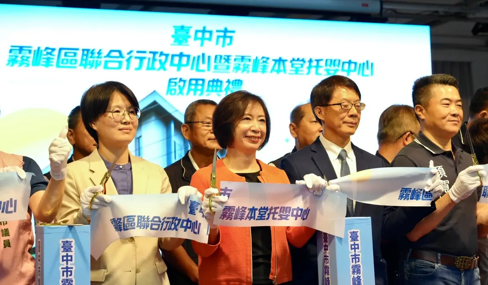

沈伯洋PumaPumaShen

市長你給我聽好了記者會
Posts
市長你給我聽好了記者會
@hsiehlungchieh:誠新綠能案愈查愈深，從工程款跳票、積欠養殖戶租金，如今更被查出涉嫌與大股東新光國際投資共謀，向銀行團詐貸近47億元，新光國際投資負責人林伯翰等3人已遭羈押。 今年7月，龍介接獲台南地方包商、供應商陳情，公開誠新綠能案時就說過，這件案子沒這麼簡單，絕對不能只當作一般商業糾紛或單純欠工程款處理。 如今案情從公司內部疑似挪用資金，一路擴大到涉嫌利用不實股權結構向銀行團詐貸，證明地方包商當初的擔憂，絕對不是空穴來風。 不少在地包商投入人力、機具與資金進場施工，最後卻遇到案場停工、工程款拿不到；公司核心人士、股權與資產也陸續出現異動。龍介當時就要求，必須全面清查金流、股權及資產流向，注意是否存在脫產或規避債務的風險。 司法怎麼偵辦、最後如何認定，我們尊重；但政府不能把責任全部丟給司法，自己站在旁邊等結果。這麼大規模的漁電共生開發，從案場許可、養殖實績，到融資進度與履約管理，主管機關究竟掌握多少？什麼時候發現異常？為什麼沒有及早示警、介入處理？都應該向社會說清楚。 案情愈查愈大，受害鄉親的權益就愈不能被擺到最後。


@a_chun1973:台中市民普遍感覺，這幾年來的台中，背離了原有的城市價值。 今天來到霧峰，大家想到的是廚餘；來到大里，想到的是垃圾山，表示這些年來城市該被解決的問題，都沒有被解決，屯區這幾年的發展停滯，看起來被邊緣化。 我帶著滿心祝福來參加 #霧峰聯合行政中心 落成啟用典禮，但我也想起 #大里聯合行政中心，至今仍是一片空地，八年來沒有任何動靜，屯區要進步，建設的腳步不該停滯。 我心中的城市價值，就是每位市民，無論台中的山、海、屯、市，都值得擁有好的生活環境、值得優質的行政服務水準。 區域的均衡發展，就是台中的城市價值，何欣純要用「行動、溫度、創新」均衡台中的區域發展，恢復台中這座城市的價值與榮光！

#永安廟口開講 #永安宮 幾個禮拜前，永安淹大水，我也來到這邊。 淹水、沒有都市計畫、資源分配不均，很多問題一等就是幾十年。 鄉親已經給同一個政黨近40年的時間，能不能換人做做看？ 永安「永遠平安」， 民眾要的很簡單，就是政府把建設做好，讓大家安心生活。 40年夠了。 接下來4年，讓我們一起改變高雄！


市民才是這個城市的主人， 市民聲音能被真實的反應， 才有辦法建造美好的城市！ #市長你給我聽好了 #台北順起來 #你的市長沈伯洋

Undermining Taiwan's Democracy! Cho Jung-tai Uses "Refusal to Countersign" to Restrain the Legisl...

增氣就要拆煤 承諾就要兌現 守護臺中的藍天與健康呼吸權，啟臣一步都不會退讓！ 昨天啟臣陪同盧秀燕市長實地考察中火，我們的重點絕不是走馬看花，而是要嚴格檢驗：「中央對臺中市民的承諾，到底有沒有說到做到」？ 中火今年的用煤目標降至1,050萬噸，但大家最關心的下一步——老舊燃煤機組到底要拆幾部？何時才肯拆？中央政府必須給臺中鄉親一個清清楚楚、不容拖延的時間表！ 啟臣的立場從頭到尾始終如一： 我們支持穩定供電，但絕不能以犧牲市民健康與中臺灣空氣品質為代價！ #增氣拆煤 #拒絕減煤空窗期 #守護呼吸權

守護校園食安，是我們一直以來最重視的。 針對今日成淵高中國中部多名學生腹瀉情形，我在第一時間要求市府團隊積極介入處理。現在最重要的，就是把孩子的健康照顧好、盡快查清楚原因，也讓家長清楚掌握最新情況。 目前市府從學生健康、採檢調查到供餐處置同步進行，我也要求相關局處加快速度、持續追蹤。 一、勒令停業、廠商解約 教育局、衛生局接獲通報後，第一時間進校督導、稽查並採樣送驗。 衛生局已依法勒令業者停業。今日稽查發現5項缺失，要求限期改善，最重可罰2億元。 教育局要求學校終止契約，撤換供餐廠商。孩子的食安，沒有妥協空間。 二、 加速採驗確認 、備援供餐不中斷 熱食部已全面清消，由備援業者接手國中部午餐供應。不能影響孩子每天正常吃飯、上課，我要求替代餐點的安全與衛生一樣要嚴格把關。 目前午餐留樣檢體已經送驗，也同步進行疫調、查核及相關檢體採驗，盡快把原因查清楚。 三、公衛介入、追蹤學生健康 市府已成立府級專案小組，專案追蹤學生的健康及後續情況，即時提供必要的醫療協助與關懷。 校方也已完成學生造冊並進行分級追蹤，持續與家長保持聯繫，掌握每一位孩子的身體狀況，確保都獲得妥善照顧。 四、擴大抽查、強化通報 擴大臺北市校園食安抽查，針對全市中小學團膳業者及校內熱食部，加強無預警衛生稽查，從食材、環境到製作流程全面把關。 同時，重新檢視食材採購、驗收及製程規範，強化異常情形的現場檢查及通報機制，及早發現問題、即時處理風險。 從這起事件的處理，到全市校園的供餐管理，我要求市府團隊把每一個環節確實顧好，讓孩子安心吃飯、也讓家長放心。

誰出的錢養網軍、國家機器？最初的受害者賴總統如今成了加害者

0906受訪 #受訪 #市政問題解決方案討論 #利益迴避 #兒童保護 #大型活動事先完整規劃 #安全為主 #深入基層 #與議員站在一起 #夜間市長

@hammer__lee:「來！看這邊」，我把時間留給鏡頭，留給里長，為好友誼做見證。 今天我和新北市200多位里長，一起拍競選照，我遇到好多好朋友，也認識不少新朋友，我們都一起在努力向前走。 握拳、比讚、背靠背，或是人人都是花一朵，什麼姿勢我都OK，里長的活力，是我繼續拚的動力。 新莊中泰里長郭樹琳還特別帶了里民為我做的手工應援小物，上面有我、我的logo，原來就是用手搖旗縫製成的，有她的細心與貼心，讓我感到暖心。 新北29區，里長是我的貴人，他們是地方的眼與耳，哪條路壞了、哪盞路燈不亮，在第一現場紀錄社會變遷，提供市府好的建議，一起往對的方向前進。 我的筆記本裡，都是里長們的指教，非常榮幸能一起並肩拚戰，滿足地方的期盼，讓里民的日子過得順。 「吸氣、縮小腹、挺胸！」，我們里長聯誼會長一個一個都在旁邊盯場，我哪敢鬆懈，成果出來，每個人都像一朵花，都綻放得最開。 咱堂堂新北市，親像花當開。
誠新綠能案愈查愈深，從工程款跳票、積欠養殖戶租金，如今更被查出涉嫌與大股東新光國際投資共謀，向銀行團詐貸近47億元，新光國際投資負責人林伯翰等3人已遭羈押。 今年7月，龍介接獲台南地方包商、供應商陳情，公開誠新綠能案時就說過，這件案子沒這麼簡單，絕對不能只當作一般商業糾紛或單純欠工程款處理。 如今案情從公司內部疑似挪用資金，一路擴大到涉嫌利用不實股權結構向銀行團詐貸，證明地方包商當初的擔憂，絕對不是空穴來風。 不少在地包商投入人力、機具與資金進場施工，最後卻遇到案場停工、工程款拿不到；公司核心人士、股權與資產也陸續出現異動。龍介當時就要求，必須全面清查金流、股權及資產流向，注意是否存在脫產或規避債務的風險。 司法怎麼偵辦、最後如何認定，我們尊重；但政府不能把責任全部丟給司法，自己站在旁邊等結果。這麼大規模的漁電共生開發，從案場許可、養殖實績，到融資進度與履約管理，主管機關究竟掌握多少？什麼時候發現異常？為什麼沒有及早示警、介入處理？都應該向社會說清楚。 案情愈查愈大，受害鄉親的權益就愈不能被擺到最後。公司可以改組、股權可以移轉、事業可以轉手，但積欠包商的工程款、養殖戶的租金，以及業者應負的責任，不能跟著一筆勾銷。 中央與台南市政府應建立單一協助窗口，盤點欠款及停工案場，協助包商、供應商、地主與養殖戶保全債權，同時掌握相關資產流向。不能等到資產移轉完、公司只剩一個空殼，才叫受害鄉親自己想辦法求償。 龍介會持續追蹤誠新綠能的偵辦進度，也會繼續追查政府監督責任。這件案子不只要查清楚誰涉案、錢流到哪裡，更要全面檢討漁電共生的審查與監管制度。 該追回來的錢，一筆都不能少；該負的責任，一個都不能放。受害鄉親的權益，政府更要顧到底！
@schuanglawyer:桃園不需要神隱市長，更不該是犯罪集團的溫床。 桃園爆發駭人聽聞的人口販運與器官買賣未遂案，不法集團用工作機會當誘餌，把三位求職者囚禁在中壢民宅，企圖送到境外摘取器官。 幸好在尚未出境前，檢警及時阻止憾事發生，感謝第一線同仁努力！ 本案揭露四天以來，看不到張善政的態度。治安亮紅燈的第一時間，首長必須站出來安撫民心、宣示強力掃蕩意志。但直到週日深夜，市民還是不了解張市府打算如何防止類似案件發生。 有些年輕人自嘲中壢是「台灣佛羅里達」，本來是玩笑話。但現在的中壢，除了是頻頻塞車的大工地，還淪為犯罪集團的器官庫。 張善政的沈默，不只是對受害者冷漠，更對不肖分子釋放錯誤訊息。難道桃園是一個出了大事，市長也毫無反應的城市嗎？ 我是黃世杰，面對人口販運與黑牢，除了加強求職陷阱宣導，積極打擊幫派等犯罪組織外，我主張市府必須主動出擊、連根拔起。 從源頭斷絕，勞動局應主動鎖定不合常理的高薪求職廣告，重罰假徵才公司並移送法辦；與檢警合作建立通報機制，里長、房東或管委會若察覺住宅進出異常，可即時通報；配合檢警清查後，若不法據點有違建或違規使用情形，建管處依相關法令，積極進行斷水斷電或強制拆除。

高雄非法棄置廢棄物場址高達104處、全台最多。這個第一，高雄承受不起 審計部最新報告揭露，高雄非法棄置廢棄物場址高達104處，數量居全台之冠；部分場址列管超過10年，至今仍未清理完畢。 去年清運車輛GPS軌跡異常更高達7,875車次，部分車輛反覆出現異常，環保局的裁罰卻未能發揮嚇阻作用，讓違法偷倒案件一再重演。 從美濃大峽谷、田寮垃圾山，到大樹統嶺農地濫墾濫倒，我陸續追查、揭露這些重大環境弊案，就是希望問題受到正視，讓高雄的土地免於繼續遭到破壞。 審計報告如今揭露的種種缺失，也印證了我們過去不斷提出的警告。市府雖然已經提出精進專案報告，接下來更要拿出清理進度、查緝成果與裁罰強度，徹底堵住管理漏洞。 為了重整高雄的廢棄物管理與環境執法體系，我提出守護國土「四大對策」： 一、擴大「環檢警快打平台」，建立南台灣區域聯防 現有平台已結合檢察官、市刑大及保七總隊等查緝量能，未來將進一步串聯台南與屏東，建立三縣市區域聯防。 非法棄置集團經常跨縣市運輸、轉手及傾倒，查緝防線也要跨出行政區界。從可疑車輛、運輸路線到棄置地點共同追查，讓不法業者無法藉由跨區流竄逃避查緝。 二、升級「棄置通報平台」，四大區精細管理 將現行北、中、南三區通報平台擴大為北、中、南、東四區，再依地理環境與棄置風險細分為8至12個小區。 透過整合區公所、清潔隊、在地志工及警察局的巡查力量，讓通報、列管、查處及後續追蹤緊密銜接。偏遠農地、山區及市郊不能再成為執法死角。 三、建立清運車輛「GPS異常即預警」智慧監控 針對去年高達7,875車次的GPS異常軌跡，導入AI智慧監控。車輛一旦出現偏離路線、異常繞道或長時間停留，系統立即通知執法單位。 同時要求廠商第一時間聯繫駕駛、確認設備狀況，並由稽查人員前往異常路段巡檢。每一筆異常都要留下處理紀錄，防止真正的非法傾倒藏在大量異常資料之中。 四、強化科技執法，建立「點、線、面」全域防護 持續擴增智慧圍籬與車牌辨識系統，將易棄置熱點的CCTV增加至100組，重點布設於國道10號仁武、嶺口、旗山，以及國道3號田寮等主要交流道周邊與高污染風險地區。 另外也應該透過每月專案會報，定期檢視異常車輛、熱區變化、查緝進度及後續裁罰，讓科技設備真正成為查緝工具，持續追蹤每一件案件。 非法業者省下的處理成本，最後往往變成市民承擔的污染風險與鉅額清理費用。土地一旦遭到破壞，留下的傷害可能延續十年、二十年，甚至由下一代繼續承受。 未來若有機會帶領高雄，我會以「零容忍」的態度重塑環境執法體系。該查就查、該罰就罰、該追責就追到底，讓每一輛清運車都有跡可循，每一處非法棄置場址都有清理期限。 高雄的山林、農地與水源，不能再等下一起弊案曝光才獲得保護。 用鐵腕守護國土，還給市民一個乾淨、安全、永續的家園。 #非法棄置零容忍 #守護高雄國土 #環境治理四大對策

@hsiehlungchieh:超徵稅收應合理的分配「還稅、國防、民生、社會福利」


傷害台灣民主！卓榮泰用「不副署」箝制立法院…行政院稱僅3.8%立院三讀法案未副署

9/9律師節。 回想我執業的日子，和大家印象中穿律師袍，天天跑法院的想像有點不同。更多時候，我專注梳理法規架構、制度設計跟風險把關，隱身在幕後捍衛公平。 走入公共事務後，我帶著法學訓練，投入對社會有益的制度工程改造。 我在桃園市政府時，參與升格直轄市的龐雜自治法規翻新，為新桃園奠定運作基石。在立法院，把基層民意轉化為嚴謹法案，守護國家大政和民主法治。到了法務部，則從中央視角推動各項法務政策，強化國家法制防線。 現在，我帶著地方自治、中央行政和立法歷練，回到桃園投入市長選舉。我知道，一套好的制度，能改變千千萬萬人生活。我想用專業為家鄉打造更好的生活，為市民爭取更大福祉的決心，從來沒有變過。 法律是守護公平和弱勢的底線，世杰要向每一位在法庭奔走、為當事人權益挺身而出的道長們致敬。祝福大家律師節快樂！
守護校園食安，是我們一直以來最重視的。 針對今日成淵高中國中部多名學生腹瀉情形，我在第一時間要求市府團隊積極介入處理。現在最重要的，就是把孩子的健康照顧好、盡快查清楚原因，也讓家長清楚掌握最新情況。 目前市府從學生健康、採檢調查到供餐處置同步進行，我也要求相關局處加快速度、持續追蹤。 一、勒令停業、廠商解約 教育局、衛生局接獲通報後，第一時間進校督導、稽查並採樣送驗。 衛生局已依法勒令業者停業。今日稽查發現5項缺失，要求限期改善，最重可罰2億元。 教育局要求學校終止契約，撤換供餐廠商。孩子的食安，沒有妥協空間。 二、 加速採驗確認 、備援供餐不中斷 熱食部已全面清消，由備援業者接手國中部午餐供應。不能影響孩子每天正常吃飯、上課，我要求替代餐點的安全與衛生一樣要嚴格把關。 目前午餐留樣檢體已經送驗，也同步進行疫調、查核及相關檢體採驗，盡快把原因查清楚。 三、公衛介入、追蹤學生健康 市府已成立府級專案小組，專案追蹤學生的健康及後續情況，即時提供必要的醫療協助與關懷。 校方也已完成學生造冊並進行分級追蹤，持續與家長保持聯繫，掌握每一位孩子的身體狀況，確保都獲得妥善照顧。 四、擴大抽查、強化通報 擴大臺北市校園食安抽查，針對全市中小學團膳業者及校內熱食部，加強無預警衛生稽查，從食材、環境到製作流程全面把關。 同時，重新檢視食材採購、驗收及製程規範，強化異常情形的現場檢查及通報機制，及早發現問題、即時處理風險。 從這起事件的處理，到全市校園的供餐管理，我要求市府團隊把每一個環節確實顧好，讓孩子安心吃飯、也讓家長放心。

0907受訪-1 #受訪 #問A答B #兒童保護 #市議員應該要反應民意 #市政辯論 #無痛行政 #減輕社工壓力 #減輕教師壓力 #城市設計


潘孟安秘書長：「眾人做，眾人得。匯聚眾人之善，就能成就眾人之志。」 我始終相信，政治工作無他，誠信而已。 鄭麗文 傅崐萁 翁曉玲 首頁>政治新聞 政治新聞 鄭麗文訂中秋禮盒跳票？ 慢慢 恆春庇護工場急問:300盒 300盒訂 單呢？ 2026/09/05 2026/09/0513:00 13:00 f LINE 2S 慢慢反春共焙坊'." referrerpolicy="no-referrer">
You haven't cleared the drains... so how can you claim there's no money for flood control?
霧峰行政中心落成、大里仍一片空地 何欣純：準市區格局推屯區大進擊 立法委員何欣純今（14）日出席霧峰區聯合 […] 〈 霧峰行政中心落成、大里仍一片空地 何欣純：準市區格局推屯區大進擊 〉這篇文章最早發佈於《 何欣純官方網站｜2026 台中市長候選人 》。
桃園市爆發駭人聽聞的人口販運與器官買賣未遂案，不法集團用工作機會當誘餌，把三位求職者囚禁在中壢民宅，企圖送到境外摘取器官。 不幸中的大幸是，在人尚未出境前，檢警及時阻止憾事發生，感謝第一線同仁的努力！ 本案揭露四天以來，市民看不到張善政的態度，身為首長，在治安亮起紅燈的第一時間，就必須站出來安撫民心、宣示強力掃蕩的意志。但是直到週日深夜，市民還是不了解張市府打算如何防止類似案件再次發生。 網路上有些年輕人會自嘲中壢是「台灣佛羅里達」，本來是玩笑話。但現在的中壢，除了是動不動塞車的大型工地，還淪為犯罪集團的器官庫。 張善政的沈默，不只是對受害者的冷漠，更是對不肖分子釋放錯誤訊息。難道桃園真的是一個出了天大的事，市長也不會有反應的城市嗎？ 桃園不需要神隱市長。 我是黃世杰，面對人口販運與黑牢，除了加強求職陷阱宣導，積極打擊幫派等犯罪組織外，我主張市府必須主動出擊、連根拔起。 我們要從源頭斷絕誘餌，勞動局應主動鎖定不合常理的高薪求職廣告，重罰假徵才公司並移送法辦；與檢警合作建立通報機制，里長、房東或管委會，若察覺住宅進出異常，可即時通報；配合檢警清查後，若不法據點有違建或違規使用情形，建管處依相關法令，積極進行斷水斷電或強制拆除。 桃園不是犯罪集團的溫床。讓我們來努力！

Citizens are the true masters of this city; only when their voices are genuinely heard can we bui...

傷害台灣民主！卓榮泰用「不副署」箝制立法院…行政院稱僅3.8%立院三讀法案未副署

「不要你給我好聽的，我要你給我聽好了！」 ⠀ 選舉通常都是候選人講、市民聽。 政見一個個端出來，大家只能坐在台下聽。 ⠀ 但是這一次，我們想反過來： 讓市民先說，候選人好好聽。 ⠀ 「市長，你給我聽好了！」 ⠀ 是一個透過 LINE 即時蒐集大家對台北市政最直接感受的平台。 只要透過掃描QR Code或點擊留言區連結， 即可加入並開始參與！ ⠀ 📍參與方式只需三步： ⠀ Step 1｜選擇你在意的議題 Step 2｜輸入你的感受與想說的話 Step 3｜加入隊伍，等待上台發表 ⠀ 我們要打造「全世界最長的市民政見隊伍」。 每一位市民，都可以上台， 沈伯洋則坐在台下努力記錄； 每一句「我受夠了」，都應該被整理成下一任市長的任務。 ⠀ 📍上台不是結束，是政見的開始。 ⠀ 每一則發言都會依照議題去整理與分析，讓我們能夠依照真實的民意，完善市政意見資料庫。 ⠀ 排隊期間，LINE 會主動通知上台時間與目前進度。 等待的同時，你也可以看看其他人在意什麼，持續留在這場城市對話裡。 ⠀ 九月下旬，我們還會舉辦實體活動，進一步回應市民提出的問題，把第一線心聲轉化成具體的政策方案。 ⠀ 這不是候選人給市民的承諾， 這是市民交給候選人的考卷。 ⠀ 候選人要做的，不是講得更好聽，而是把市民的每一句話，「都聽好了」。 ⠀ #市長你給我聽好了 #台北順起來 #你的市長沈伯洋 ⠀ ⠀ 「市長，你給我聽好了！」官方LINE ▻▻ https://lin.ee/oPKbaZW

0909受訪 #受訪 #市政辯論 #美鳳有約 #鏡文學採訪 #新聞採訪自由 #利益衝突 #市民是主角 #市長你給我聽好了 #韌性城市 #城市願景

20260908 行政院提追加六千億預算..中聯毒油案...泰山向4公司提告求償10億！回覆網友陳情進度：道路安全、交通議題 @longmedia ｜龍介的直播

0907受訪 #受訪 #兒童保護 #一個台北二個世界 #交通議題 #衛生議題 #AI城市 #城市願景 #利益迴避 #赴中風險注意

0905受訪-1 #受訪 #濟南教會 #城市願景 #陳其邁市長 #台北智庫-台北研究院 #市政辯論 #問A答B